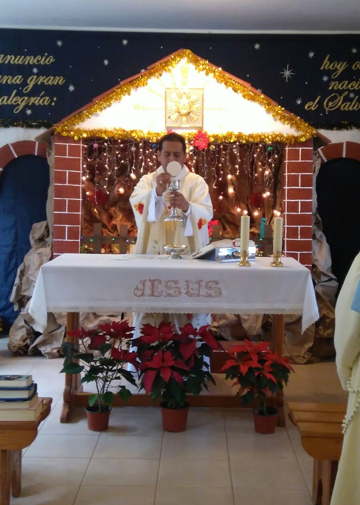

La Real Presencia de Jesucristo en la Eucaristía es el centro de nuestra vida de entrega a Dios. El encuentro con Cristo en este sacramento de Amor sostiene y anima nuestras jornadas.
Eucaristía, prodigio infinito del amor de Dios.
Madre María Luisa
¡Donde se agotó su amor y su omnipotencia!
Su cuerpo humano, con toda su intensidad y energía vital de cuando andaba con los pescadores del lago;
de cuando envolvía a los niños en su caricias;
de cuando predicaba sobre la montaña dominando las multitudes con su ancha mirada;
de cuando se ponía de pie sobre la barca para imperar a los vientos, ha quedado “con nosotros” hasta la consumación.
Da escalofrío acercarse al Sagrario y tener que decir, con el terrible peso de la verdad: “Aquí… está… Jesús”… ¡Aquí ESTÁ!
